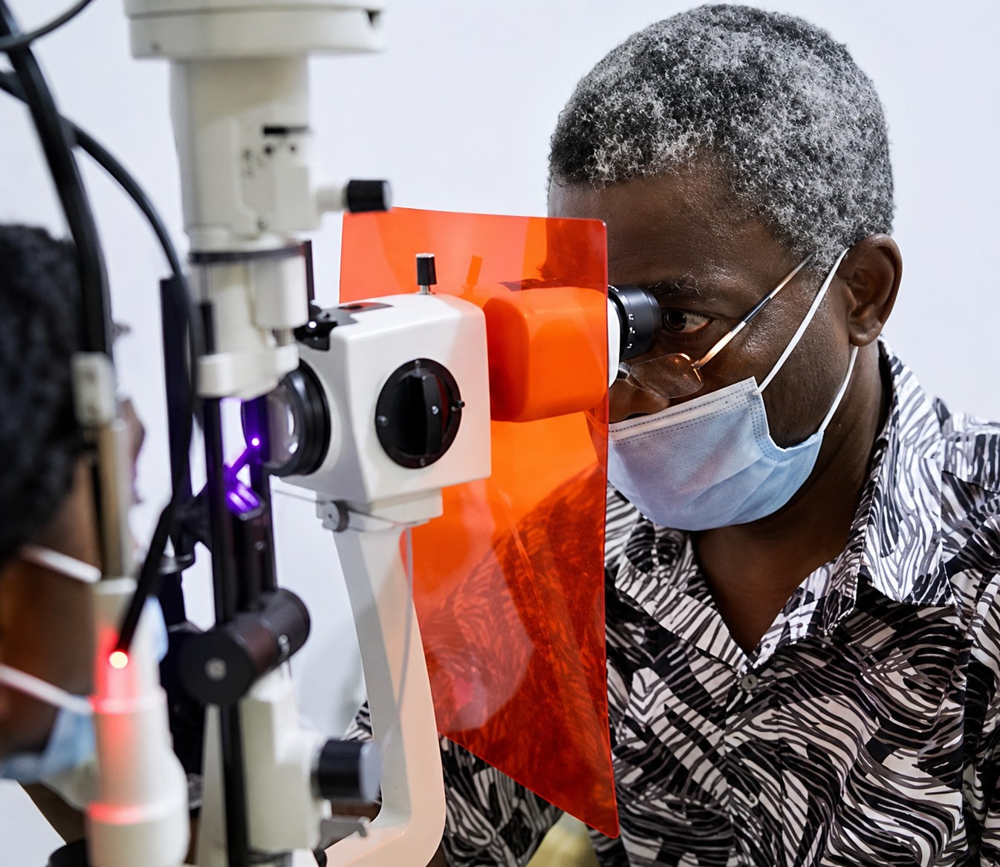

Quality, Affordable Eye Care

At Akafo Eye Services, we believe that good vision is essential to a healthy and fulfilling life. Our clinic is dedicated to providing high-quality eye care services that help individuals and families maintain healthy eyesight and improve their quality of life. We understand that every patient is unique. That is why we take the time to listen, understand your concerns, and provide personalized eye care solutions that meet your specific needs. Whether you need a routine eye examination, treatment for an eye condition, or advice on maintaining healthy vision, our experienced team is committed to delivering the highest standard of care. Our approach is built on professionalism, compassion, and integrity. We treat every patient with respect, regardless of age, background, or social status, ensuring that everyone has access to quality eye health services in a welcoming and comfortable environment.
Our mission is to provide exceptional eye care services with honesty, professionalism, and compassion while respecting the unique needs of every patient. We are committed to making quality eye care accessible to all members of our community and promoting better eye health for a brighter future.
We aspire to be the most trusted eye care provider in our community, recognized for excellence, integrity, and outstanding patient care. Through advanced eye care services and continuous improvement, we aim to transform lives by helping people achieve and maintain better vision.
Our patients are at the heart of everything we do. We take time to understand your concerns, answer your questions, and provide treatment plans that are tailored to your individual needs.
We believe trust is earned through honesty and transparency. Our team maintains the highest ethical standards and is committed to providing accurate information, professional guidance, and confidential care at all times.